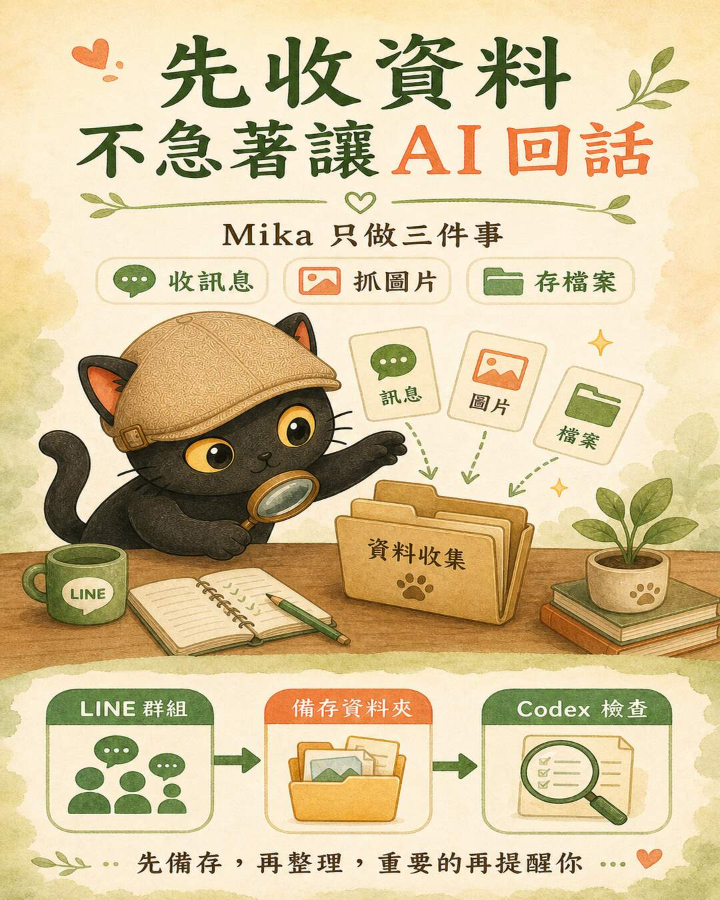
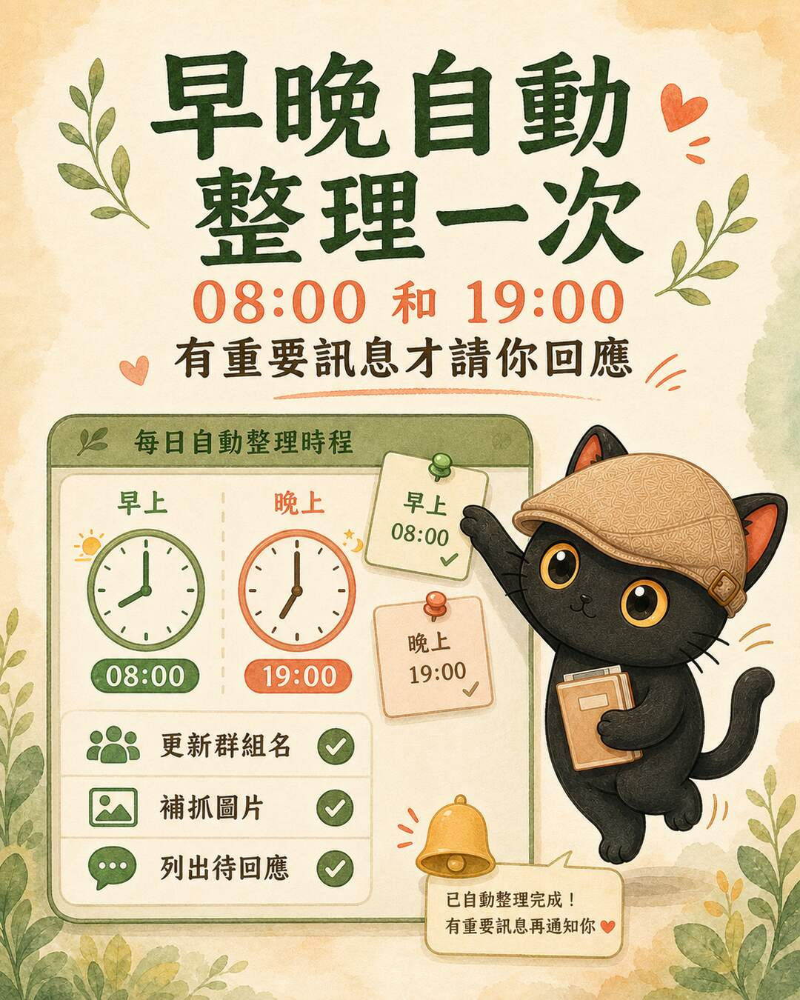
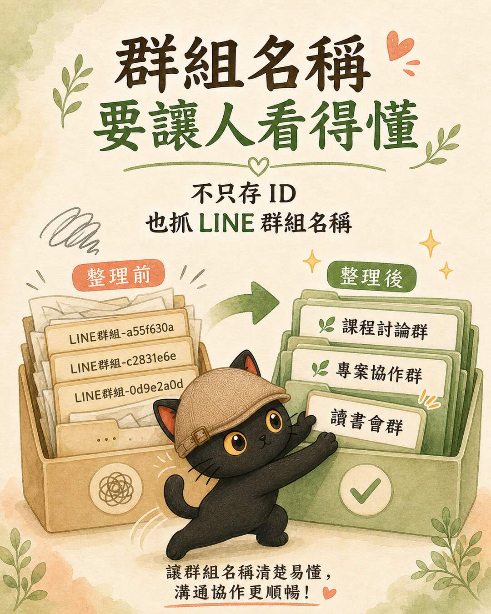

One-Page Summary
This workflow addresses a very everyday problem: people share links, photos, meeting notes, and PDFs in group chats. Everyone can see them in the moment, but a few days later when you need to find something, all you can do is scroll up and hope someone remembers. Mika is just the demo name. What you are actually building is your own LINE AI assistant.
Add your own official account to regular LINE groups. When new messages arrive, LINE proactively pushes the events to your receiving service through a webhook.
Images, videos, audio, and files are retrieved by messageId and stored in folders organized by group and date.
An Agent runs once a day to update group names, fetch missing attachments, and flag messages that need a human response.

Minimum Viable Workflow
Everyone continues sharing messages, images, PDFs, and links as usual.
Your LINE AI assistant receives new message events after activation through the webhook.
Text is stored immediately; images and attachments are fetched in a separate pass.
Daily automatic run updates group names, fetches missing attachments, and identifies messages awaiting a response.
The responsible person is notified only when something important appears. The system never replies on anyone's behalf.
200 OK. Return 200 only after the event has been successfully written to the database or cloud folder. If writing fails, return an error (5xx) so LINE has the opportunity to redeliver. Do not perform long summaries, AI calls, or bulk uploads at receipt time. Those tasks belong to a background job or the nightly organization run.
Why Not Use the Personal LINE App
LINE offers two paths. An official account uses the Messaging API webhook, which can join groups and receive new events after activation. The personal LINE app and its desktop chat history require screen-reading or OCR, a centaur-style approach. The two mechanisms are fundamentally different. Confirm which path you are on before proceeding.
Join groups, receive new messages after activation, archive by groupId, use the Group Summary API to retrieve human-readable group names, and fetch images and attachments.
This approach does not read your personal LINE app, and it cannot backfill message history from before the webhook was activated. Whether the assistant replies inside a group requires a separate design decision.
If You Are Not Familiar with the LINE Console
You can authorize Codex or another Agent to operate your screen during the current session to help confirm the official account, Messaging API, webhook, and group join settings. The block below is authorization language you can speak directly to an Agent. You do not need to understand every setting yourself.
You can create a dedicated official account or use an existing one. If you already have a brand official account, confirm the impact before changing the webhook or Messaging API settings. Do not touch an active account without being certain of the scope.
Before adding the assistant to a group, let members know it will archive new messages and attachments after activation, and clarify that the purpose is organization and reminders, not surveillance or automatic replies on anyone's behalf.
Your channel access token and channel secret are the credentials for your LINE official account, equivalent to a password. Do not paste them into chat, do not write them into a notes app, and do not upload them to GitHub or any code platform. For long-term storage, use a local config file (.env) or the system Keychain.
Credentials stay on the local machine only. Messages, images, and PDFs go to the archive folder designated by your team, synced according to your team's own rules.

How Group Names and Attachments Are Organized
Initially, LINE webhooks only reliably provide the unique identifier LINE assigns to each group: the groupId. Using a raw ID as a folder name is not human-readable. The maintenance script calls the LINE Group Summary API to retrieve the group name, prepending the readable name and appending the ID suffix to avoid collisions between groups with identical names.

LINE-group-g1234567__g1234567
Sample-Group-Name__g1234567
Images, videos, audio, and files are retrieved using the unique messageId LINE assigns to each message. Once fetched, everything goes into folders named by group and date, making them easy to find later. A typical path looks like groups/GroupName__suffix/media/YYYY-MM-DD/, and the Markdown log is updated with human-readable links.
What This Article Is Good For
The point of this approach is to let you build your own LINE AI assistant: connecting data scattered across groups into your workflow, collecting it reliably, organizing it, and getting notified. It works best for courses, communities, small teams, and project collaborations that already run on LINE groups.
- Social post: use the real demo case to illustrate the "collect first, organize second" logic.
- Website article: treat it as a construction blueprint for building your own LINE AI assistant.
- Skill or checklist: provide the workflow, configuration guide, and .env.example so readers can build their own version, with no tokens included.
Two free sessions every month.
Join the LINE Community ↗